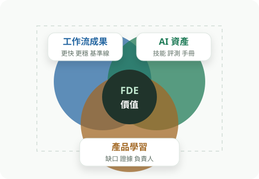
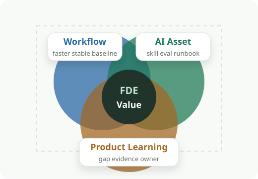
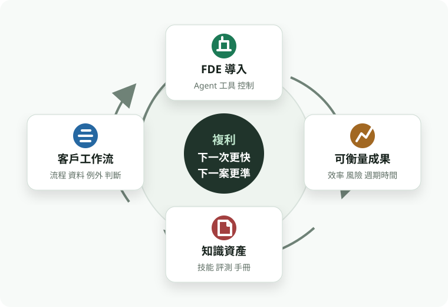
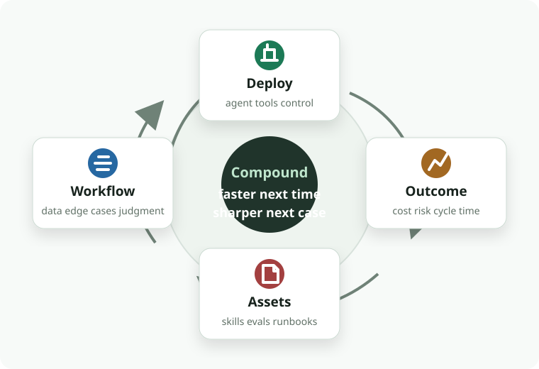
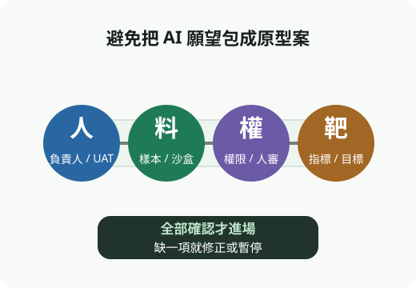
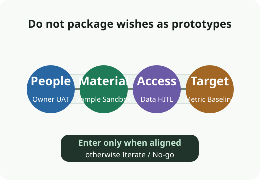
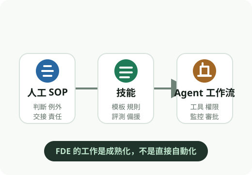
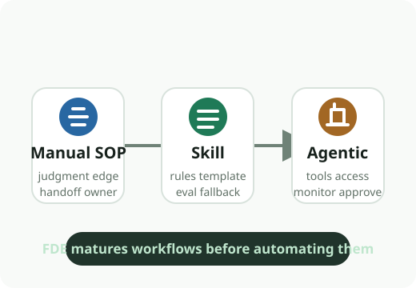
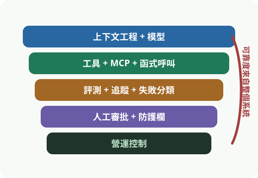
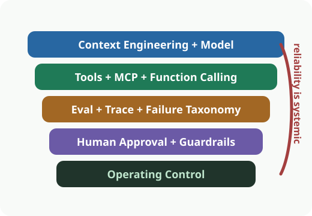

三種成果
The Three Outcomes
每個 engagement 都要留下三種證據
Every engagement leaves three kinds of evidence
價值、複用、產品學習缺一不可。
Value, reuse, and product learning must travel together.


FDE + AI Agent Operating System
複利循環
Compounding Loop
建置、驗證、通用化，讓下一次導入更快、更準。
Build, prove, generalize, then make the next deployment faster and sharper.


三種成果
The Three Outcomes
價值、複用、產品學習缺一不可。
Value, reuse, and product learning must travel together.


進場對齊 Gate
Alignment Gates
先擋掉沒有負責人、資料與指標的 AI 願望。
Filter ownerless, data-less, metric-less AI wishes early.


SOP 到 Agent
SOP to Agent
先抽出判斷，再接工具與控制。
Extract judgment first, then connect tools and controls.


Agent 能力堆疊
Agent Capability Stack
上下文、工具、驗證、人工審批一起決定可靠度。
Context, tools, evals, and human approval create reliability together.


每一次現場導入，都要同時改善客戶成果、累積 AI 資產、推動產品補洞。
Each field deployment should improve customer outcomes, grow AI assets, and close product gaps.